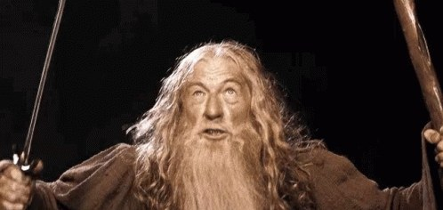

168 ontwikkelingsdoelen, elk met een ik-zin en een prent die leerlingen zelf kunnen lezen.
Kies per leerling de doelen en het talent, en maak er een PDF van om af te drukken. De tool onthoudt je leerlingen in deze browser.

You shall not pass!